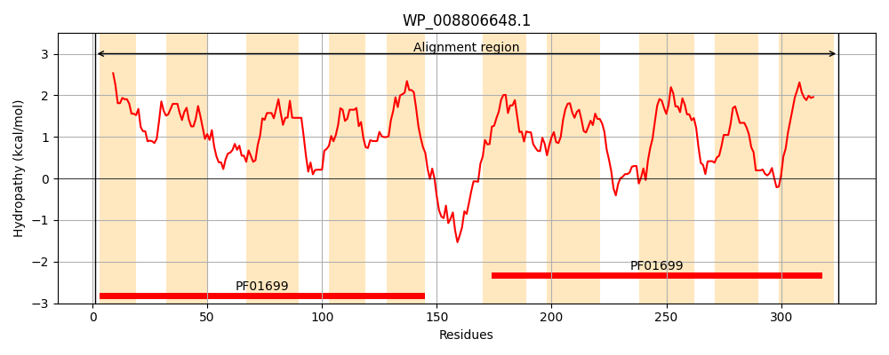
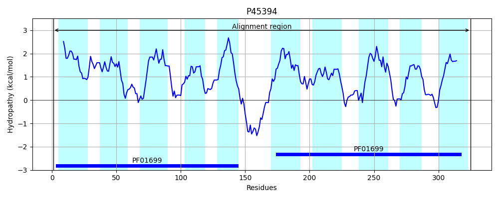
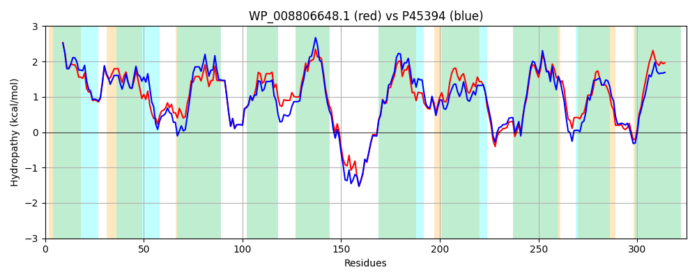

Hit Accession: P45394
Hit TCID: 2.A.19.5.1
Hit Description: gnl|BL_ORD_ID|10567 gnl|TC-DB|P45394|2.A.19.5.1 HYPOTHETICAL 34.7 KDA PROTEIN IN MURA-RPON INTERGENIC REGION (O325) - Escherichia coli.
Mach Len: 325
e:0.000000
Query TMS Count : 10
Hit TMS Count: 10
TMS-Overlap Score: 9.600000
Predicted Substrates:CHEBI:3308;calcium(2+)
BLAST Alignment:
Score: 1325 , Bit scores: 514 bits, E-value: 0.0e+00, Alignment length: 325, Percentage identity: 80
Query: 1 MLLATALLIIGLLLVVYSADRLVYAASILCRMLGIPPLIIGMTVVSIGTSLPEIMVSTTASLHGQIDLAVGTALGSNITNILLILGLAALLRPFTVHSDILRRELPLMLLVSVLAGLVLYDGQLSRLDGLFLLALALLWLLFTIKIARLAERQGSDSLTREQLAELPREGSLPVALLWLGVAMIVMPMATRMVVDNTTVLANFFAISELTVGLTVVAIGTSLPELATAIAGARKGEDDIAIGNIIGANILNIALVLGLPALIAPGSFASEAFTRDYGVMLLVSLIFAVLCWRRQQQPGRLVGALLVGGFVVWLAMLFWTAPLFVE 325
MLLATALLI+GLLLVVYSADRLV+AASILCR GIPPLIIGMTVVSIGTSLPE++VS ASLH Q DLAVGTALGSNI NILLILGLAAL+RPFTVHSD+LRRELPLMLLVSV+AG VLYDGQLSR DG+FLL LA+LWLLF +K+AR AERQG+DSLTREQLAELPR+G LPVA LWLG+A+I+MP+ATRMVVDN TVLAN+FAISELT+GLT +AIGTSLPELATAIAG RKGE+DIA+GNIIGANI NI +VLGLPALI PG A++RDY VMLLVS+IFA+LCWRR QPGR VG LL GGF+VWLAML+W +P+ VE
Sbjct: 1 MLLATALLIVGLLLVVYSADRLVFAASILCRTFGIPPLIIGMTVVSIGTSLPEVIVSLAASLHEQRDLAVGTALGSNIINILLILGLAALVRPFTVHSDVLRRELPLMLLVSVVAGSVLYDGQLSRSDGIFLLFLAVLWLLFIVKLARQAERQGTDSLTREQLAELPRDGGLPVAFLWLGIALIIMPVATRMVVDNATVLANYFAISELTMGLTAIAIGTSLPELATAIAGVRKGENDIAVGNIIGANIFNIVIVLGLPALITPGEIDPLAYSRDYSVMLLVSIIFALLCWRRSPQPGRGVGVLLTGGFIVWLAMLYWLSPILVE 325 | Protein Hydropathy Plots: |
|---|
|  |  |
Pairwise Alignment-Hydropathy Plot:
|
|---|
|  |